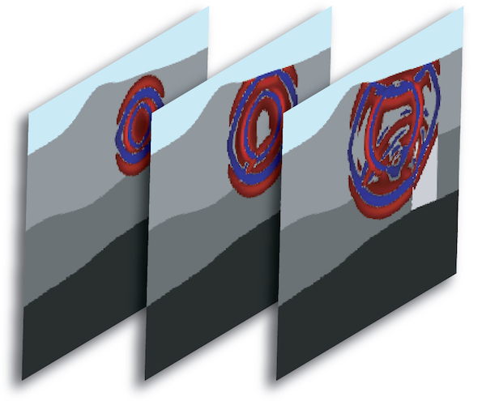

User Manual
This documentation has been automatically generated by pandoc based on the User manual (LaTeX version) in folder doc/USER_MANUAL/ (Jul 26, 2018)
For the current PDF version see: manual_SPECFEM2D.pdf

Table of Contents
- 01 Introduction
- 02 Getting Started
- 03 Mesh Generation
- 04 Running The Solver
- 05 Adjoint Simulations
- 06 Doing Tomography
- 07 Oil And Gas Industry Simulations
- 08 Informations For Developers
- A Reference Frame
- B Channel Codes
- C Troubleshooting
- D License
- Authors
- Copyright And Version
- Notes And Acknowledgement
- Sponsors